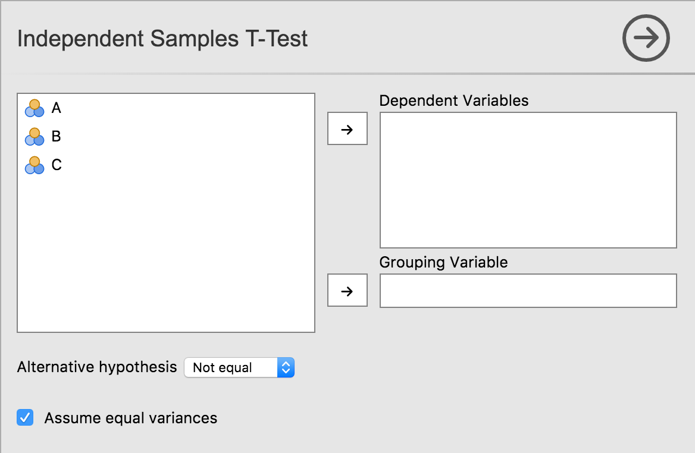

UIs for jamovi analyses are defined in the .u.yaml file (A refresher on the files and the relationship between them is described here). This describes what sort of control each option is represented by (i.e. a dropdown list, or some radio buttons), and the order and the layout in which they will appear.
aggressive vs tame compiler mode
By default, .u.yaml files are in aggressive compiler
mode. This means when installing jamovi modules with
jmvtools::install() the .u.yaml files are regenerated and
replaced each time. This is good early on in the development process,
but as development progresses, getting a UI just right or
adding custom behaviour requires hand editing of the .u.yaml files. To
prevent jmvtools from simply replacing all your changes, the .u.yaml
file can be placed in tame mode. In tame mode
the compiler respects your changes, and will not interfere with your
adjustments. The trade-off is that the compiler often can’t insert new
controls into the UI as optimally.
To begin with we’d encourage you to leave your .u.yaml files in
aggressive mode.
Controls
As we’ve seen earlier in this tutorial series with our t-test example, each option is represented by one or more controls. Our list option was represented by a list box, boolean options were represented by checkboxes, and Variable options were represented as a box that variables could be dragged to.
Let’s take a look at UI, and the .u.yaml file which is responsible for it:

title: Independent Samples T-Test
name: ttestIS
jus: '3.0'
stage: 0
compilerMode: tame
children:
- type: VariableSupplier
persistentItems: false
stretchFactor: 1
children:
- type: TargetLayoutBox
label: Dependent Variables
children:
- type: VariablesListBox
name: deps
isTarget: true
- type: TargetLayoutBox
label: Grouping Variable
children:
- type: VariablesListBox
name: group
maxItemCount: 1
isTarget: true
- type: LayoutBox
margin: large
children:
- type: ComboBox
name: alt
- type: LayoutBox
margin: large
children:
- type: CheckBox
name: varEqAs can be seen, controls are arranged in a hierarchy. At the very top
is a control of type VariableSupplier. It has two children:
deps of type VariablesListBox and
group of type VariableListBox. Together, these
three controls create the variables list, and the ‘Dependent Variables’
and ‘Grouping Variable’ drop targets.
Next is a LayoutBox which contains the hypothesis
ComboBox, followed by another LayoutBox
containing the equality of variances CheckBox. By default,
items are laid out in a grid from top to bottom.
TODO: how to layout controls in other configurations, group headings, etc.
Next: Advanced UI Design